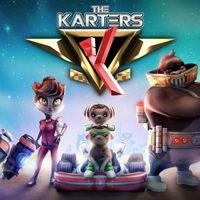

ABOUT THIS GAME
The Karters is an arcade karting game, inspired by Crash Team Racing’s gameplay, dynamics, and overall design. Grab one of the killing weapons, compete and challenge your friends in a local or global multiplayer where only one can win. Pick one of the thrilling maps and try to find alternative routes to outsmart your rivals and get the gold! Ready. Set. Go! We realize that a kart racing game has to have a lot of modes to ensure all types of players can enjoy our game to the fullest, that's why we have prepared some variations of what our players can expect when they start their karting experience. Take a look!
SYSTEM REQUIREMENTS
OS: Windows 7, 8, 10
Processor: 2 GHz Dual-Core 64-bit CPU
Memory: 2 GB RAM
Graphics: 512 MB GeForce 8800/Radeon HD 2900 XT or better
DirectX: Version 9.0
Network: Broadband Internet connection
Storage: 6 GB available space